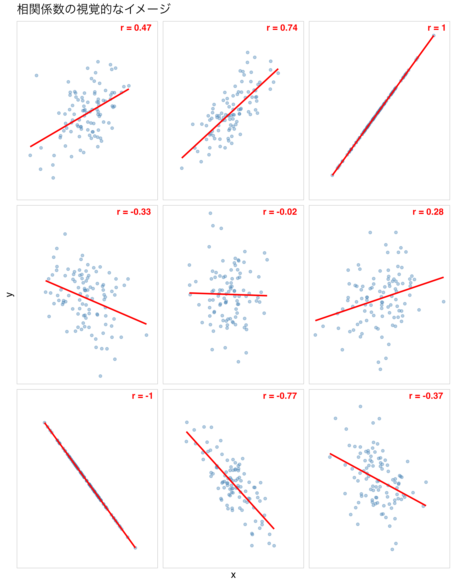
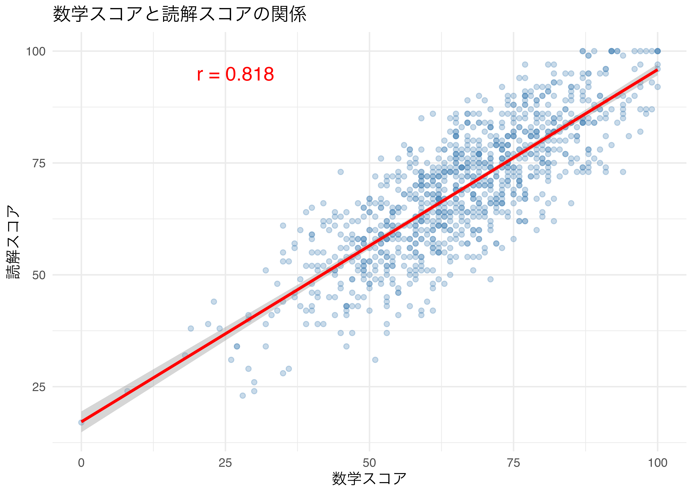
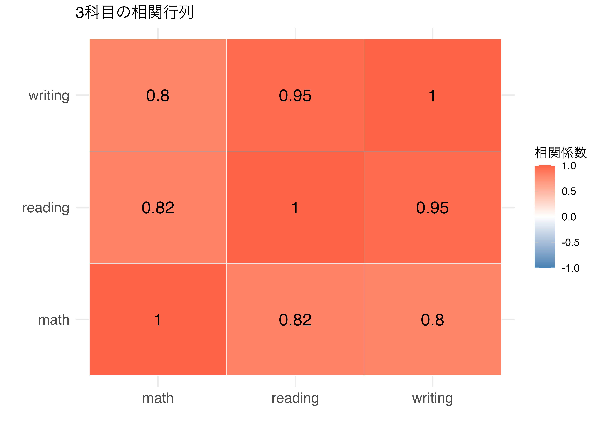
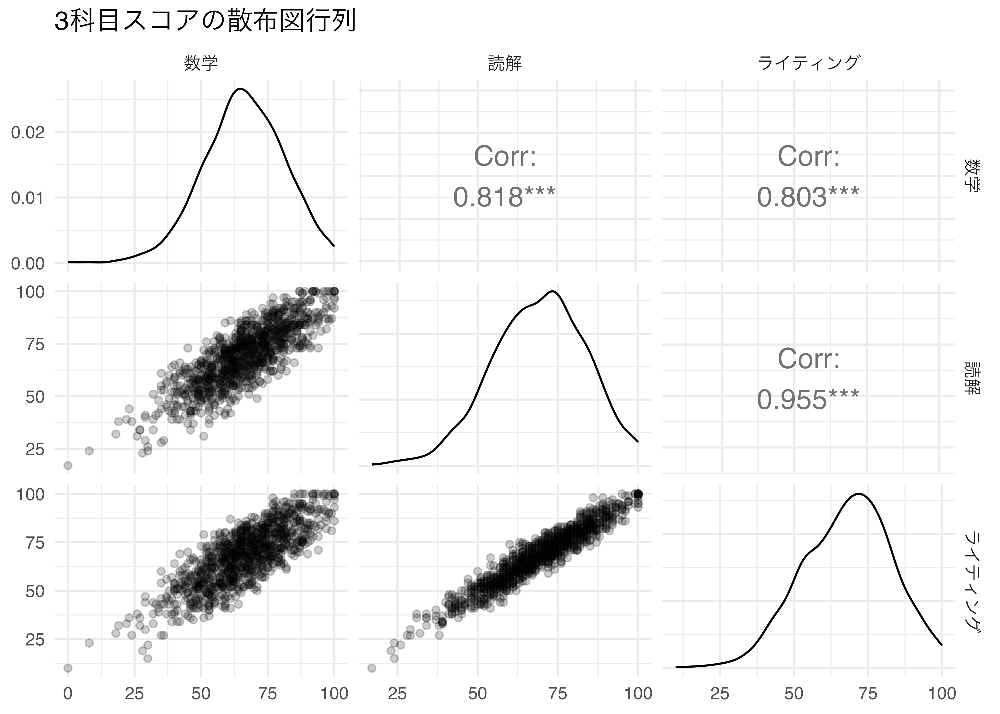
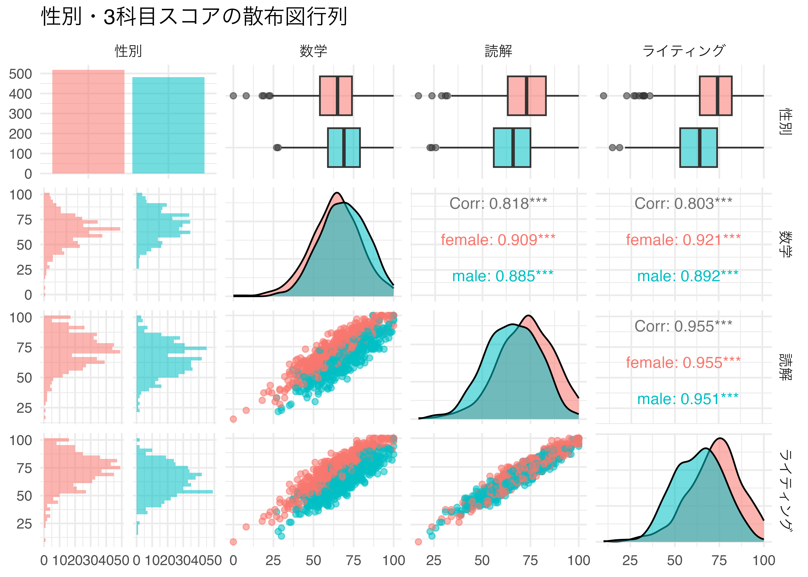
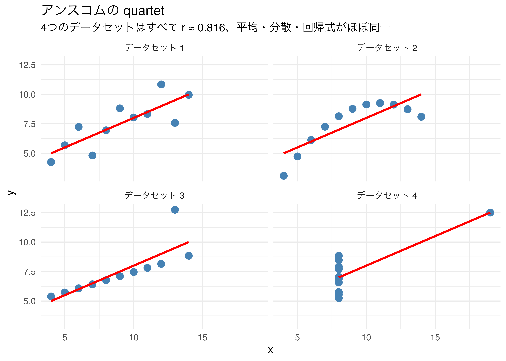
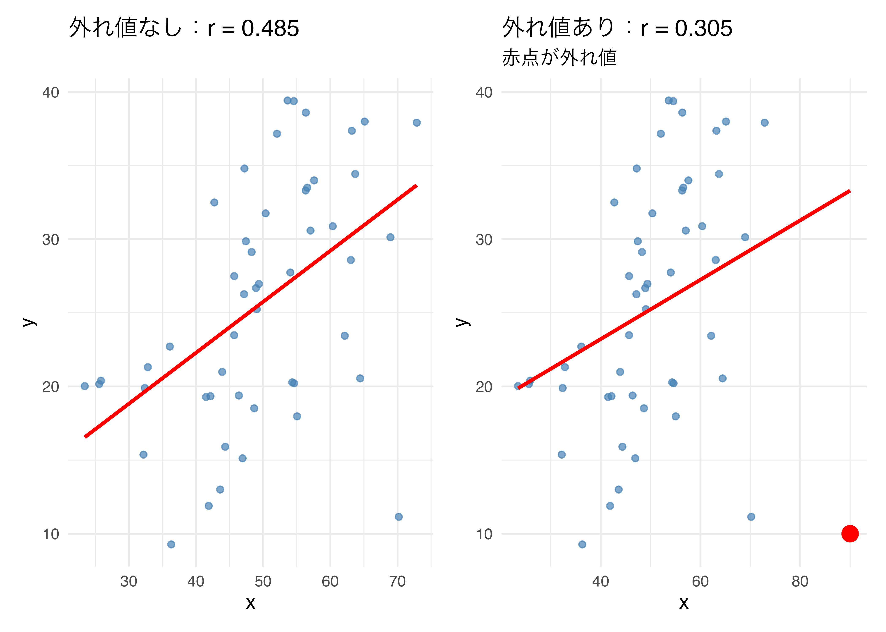

9 相関分析
2 変数の関係を数値で捉える
今日の目標
- 相関係数の意味と解釈を理解する。
- R を使って相関係数の計算・検定ができるようになる。
- 相関行列と散布図行列でデータ全体の関係を把握できるようになる。
- 相関分析の注意点（相関 ≠ 因果、疑似相関）を理解する。
9.1 パッケージの準備
大学の PC はシャットダウンするたびに初期化されるため、毎回インストールが必要です。
GGally パッケージとは
ggplot2 を拡張したパッケージで、複数変数の関係を一度に可視化する ggpairs() 関数が特に便利です。相関係数・散布図・分布をまとめて表示できます。
9.2 相関分析とは
2 変数の関係を数値化する
相関分析とは、2 つの変数の間に「どの程度の関係があるか」を 相関係数（correlation coefficient）という 1 つの数値で表す分析手法です。
前回（lec07）の t 検定は「2 グループの平均値の差」を調べるものでしたが、 相関分析は 「2 つの連続変数が一緒に動くかどうか」 を調べます。
| 分析 | 目的 | 例 |
|---|---|---|
| t 検定 | 2 グループの平均値の差 | 男子と女子で数学スコアに差があるか |
| 相関分析 | 2 変数間の関係の強さと方向 | 数学スコアと読解スコアは関係があるか |
相関係数とは
ピアソンの相関係数（\(r\)）は −1 から 1 の間の値をとります。
\[r = \frac{\sum_{i=1}^{n}(x_i - \bar{x})(y_i - \bar{y})}{\sqrt{\sum_{i=1}^{n}(x_i - \bar{x})^2} \cdot \sqrt{\sum_{i=1}^{n}(y_i - \bar{y})^2}}\]
| \(r\) の値 | 解釈 |
|---|---|
| \(r = 1\) | 完全な正の相関（一方が増えると他方も増える） |
| \(0.7 \leq r < 1\) | 強い正の相関 |
| \(0.4 \leq r < 0.7\) | 中程度の正の相関 |
| \(0 < r < 0.4\) | 弱い正の相関 |
| \(r = 0\) | 相関なし |
| \(-0.4 < r < 0\) | 弱い負の相関 |
| \(-0.7 < r \leq -0.4\) | 中程度の負の相関 |
| \(-1 < r \leq -0.7\) | 強い負の相関 |
| \(r = -1\) | 完全な負の相関（一方が増えると他方は減る） |
相関係数の解釈の目安
上の表はあくまで目安です。分野によって解釈の基準が異なります。 また、相関係数だけを見るのではなく、必ず散布図も確認することが重要です （後述の「アンスコムの quartet」参照）。

9.3 相関係数の計算
cor() 関数の基本
2 変数の相関係数は cor() 関数で計算します。
- 1
-
method = "spearman"でスピアマン順位相関係数を計算。外れ値の影響を受けにくい。
[1] 0.8040639ピアソン vs スピアマン
| ピアソン | スピアマン | |
|---|---|---|
| 前提 | 正規分布、線形関係 | 前提なし |
| 外れ値 | 影響を受けやすい | 受けにくい |
| データ型 | 連続変数 | 連続変数・順序変数 |
| 使いどころ | 正規分布に従う連続変数 | 外れ値がある・順序データ |
迷った場合は両方計算して比較するのが安全です。
相関係数の可視化
相関係数を計算する前に、必ず散布図で関係を確認しましょう。
ggplot(df_students, aes(x = math, y = reading)) +
geom_point(alpha = 0.3, color = "steelblue") +
geom_smooth(method = "lm", se = TRUE, color = "red") +
annotate("text", x = 20, y = 95,
label = paste0("r = ", round(cor(df_students$math, df_students$reading), 3)),
size = 5, color = "red", hjust = 0) +
labs(
title = "数学スコアと読解スコアの関係",
x = "数学スコア",
y = "読解スコア"
) +
theme_minimal()- 1
-
geom_smooth(method = "lm")で線形回帰直線を追加 - 2
-
annotate()でグラフ内に相関係数の値をテキストとして表示
`geom_smooth()` using formula = 'y ~ x'
9.4 相関の検定
cor.test() で相関の有意性を検定する
相関係数が「偶然 0 でない値になった」のか、「統計的に有意な関係がある」のかを 相関係数の検定で確認します。
| 内容 | |
|---|---|
| 帰無仮説 \(H_0\) | 母相関係数 = 0（相関がない） |
| 対立仮説 \(H_1\) | 母相関係数 ≠ 0（相関がある） |
| 判断基準 | p 値 < 0.05 なら帰無仮説を棄却 → 有意な相関あり |
Pearson's product-moment correlation
data: df_students$math and df_students$reading
t = 44.855, df = 998, p-value < 2.2e-16
alternative hypothesis: true correlation is not equal to 0
95 percent confidence interval:
0.7959276 0.8371428
sample estimates:
cor
0.8175797 # A tibble: 1 × 8
estimate statistic p.value parameter conf.low conf.high method alternative
<dbl> <dbl> <dbl> <int> <dbl> <dbl> <chr> <chr>
1 0.818 44.9 1.79e-241 998 0.796 0.837 Pearson… two.sided tidy() の出力の読み方
| 列名 | 内容 |
|---|---|
estimate |
相関係数 \(r\) |
statistic |
t 値（検定統計量） |
p.value |
p 値 |
conf.low, conf.high |
95% 信頼区間 |
parameter |
自由度（= n − 2） |
method |
検定の種類 |
複数ペアの相関検定
3 科目の全ペアについて相関検定を実行します。
# 3ペアの相関検定をまとめて実行
pairs_list <- list(
c("math", "reading"),
c("math", "writing"),
c("reading", "writing")
)
pairs_list |>
map(~ cor.test(df_students[[.x[1]]], df_students[[.x[2]]]) |> tidy()) |>
list_rbind() |>
mutate(pair = c("数学 × 読解", "数学 × ライティング", "読解 × ライティング")) |>
select(pair, estimate, p.value, conf.low, conf.high)- 1
-
map()でリストの各ペアにcor.test()を適用し、tidy()で整形している
# A tibble: 3 × 5
pair estimate p.value conf.low conf.high
<chr> <dbl> <dbl> <dbl> <dbl>
1 数学 × 読解 0.818 1.79e-241 0.796 0.837
2 数学 × ライティング 0.803 3.38e-226 0.779 0.824
3 読解 × ライティング 0.955 0 0.949 0.9609.5 相関行列
複数変数の相関係数を一覧する
変数が 3 つ以上あるとき、全ペアの相関係数を行列形式で表示できます。
- 1
-
round(3)で小数点3桁に丸める
math reading writing
math 1.000 0.818 0.803
reading 0.818 1.000 0.955
writing 0.803 0.955 1.000相関行列をヒートマップで可視化する
相関行列をヒートマップにすると、変数間の関係が一目でわかります。
# 相関行列をデータフレームに変換
cor_matrix <- df_students |>
select(math, reading, writing) |>
cor()
# ヒートマップ用に縦長形式に変換
cor_long <- cor_matrix |>
as.data.frame() |>
rownames_to_column("var1") |>
pivot_longer(-var1, names_to = "var2", values_to = "r")
ggplot(cor_long, aes(x = var1, y = var2, fill = r)) +
geom_tile(color = "white") +
geom_text(aes(label = round(r, 2)), size = 5) +
scale_fill_gradient2(
low = "steelblue", mid = "white", high = "tomato",
midpoint = 0, limits = c(-1, 1), name = "相関係数"
) +
labs(title = "3科目の相関行列", x = "", y = "") +
theme_minimal() +
theme(axis.text = element_text(size = 12))- 1
-
rownames_to_column()で行名（変数名）を通常の列に変換 - 2
-
geom_text()でタイル上に相関係数の数値を表示

ヒートマップを描くためのデータ変形の流れ
このコードでは、cor() の出力から ggplot2 で描けるデータ形式にするために、 3段階の変形を行っています。
ステップ1：cor_matrix（行列型）
cor() の出力は通常のデータフレームではなく、R の matrix（行列）型オブジェクトです。 すべてのセルが数値で、行名・列名を持っています。
math reading writing
math 1.00 0.82 0.80
reading 0.82 1.00 0.95
writing 0.80 0.95 1.00左端の math, reading, writing はデータではなく「行の名前」として存在しています。
ステップ2：rownames_to_column("var1") 後（データフレーム型）
as.data.frame() でデータフレームに変換し、rownames_to_column() で 「行の名前」だったものを var1 という列として表の内側に取り込みます。
| var1 | math | reading | writing |
|---|---|---|---|
| math | 1.00 | 0.82 | 0.80 |
| reading | 0.82 | 1.00 | 0.95 |
| writing | 0.80 | 0.95 | 1.00 |
ステップ3：pivot_longer() 後（縦長形式）
pivot_longer(-var1, names_to = "var2", values_to = "r") で 横に並んでいた列（math, reading, writing）を縦に並べ替えます。 -var1 は「var1 列以外を縦長に変換する」という意味です。
| var1 | var2 | r |
|---|---|---|
| math | math | 1.00 |
| math | reading | 0.82 |
| math | writing | 0.80 |
| reading | math | 0.82 |
| … | … | … |
この「縦長リスト」の形（1行に X 軸の位置・Y 軸の位置・値が揃った状態）になって 初めて、ggplot2 が aes(x = var1, y = var2, fill = r) を理解して ヒートマップを描くことができます。
9.6 散布図行列（ggpairs()）
GGally::ggpairs() で全関係を一度に可視化
ggpairs() を使うと、複数変数の散布図・相関係数・分布を 1 つのグラフにまとめて表示できます。
df_students |>
select(math, reading, writing) |>
ggpairs(
columnLabels = c("数学", "読解", "ライティング"),
upper = list(continuous = wrap("cor", size = 5)),
lower = list(continuous = wrap("points", alpha = 0.2)),
diag = list(continuous = wrap("densityDiag"))
) +
labs(title = "3科目スコアの散布図行列") +
theme_minimal()- 1
-
columnLabelsで軸ラベルを日本語に変更 - 2
-
upper（右上）に相関係数を表示 - 3
-
lower（左下）に散布図を表示（alphaで透過率を設定） - 4
-
diag（対角線）に密度曲線を表示

グループ別に色分けした散布図行列
- 1
-
aes(color = gender)で性別ごとに色分け。グループ別の関係も一目で確認できる

9.7 相関分析の注意点
相関 ≠ 因果
相関関係（correlation）と因果関係（causation）は異なります。
「2 変数に相関がある」= 「一方が他方の原因である」ではない
疑似相関（spurious correlation）
2 変数の間に直接の因果関係はないのに、 第 3 の変数（交絡変数）の影響で相関が生じることを疑似相関といいます。
例： アイスクリームの売上と溺死者数の間には正の相関がある。 しかし「アイスクリームが溺死を引き起こす」わけではなく、 気温（交絡変数）が両方に影響しているためである。
アンスコムの quartet
相関係数が同じでも、散布図の形は大きく異なる場合があります。 これを示すのが「アンスコムの quartet」です。
# R 付属の anscombe データセット
anscombe_long <- anscombe |>
mutate(id = row_number()) |>
pivot_longer(-id,
names_to = c(".value", "set"),
names_pattern = "([xy])(.)") |>
mutate(set = paste0("データセット ", set))
ggplot(anscombe_long, aes(x = x, y = y)) +
geom_point(color = "steelblue", size = 3) +
geom_smooth(method = "lm", se = FALSE, color = "red") +
facet_wrap(~ set) +
labs(
title = "アンスコムの quartet",
subtitle = "4つのデータセットはすべて r ≈ 0.816、平均・分散・回帰式がほぼ同一",
x = "x", y = "y"
) +
theme_minimal()`geom_smooth()` using formula = 'y ~ x'
散布図を必ず確認する
4 つのデータセットは相関係数・平均・分散がほぼ同じですが、散布図の形は全く異なります。 データ分析では相関係数だけで判断せず、必ず散布図を描くことが重要です。
外れ値の影響
ピアソンの相関係数は外れ値の影響を強く受けます。
set.seed(42)
# 外れ値なし
df_no_outlier <- tibble(
x = rnorm(50, mean = 50, sd = 10),
y = x * 0.5 + rnorm(50, sd = 8)
)
# 外れ値あり（1点だけ大きく外れた点を追加）
df_with_outlier <- df_no_outlier |>
add_row(x = 90, y = 10)
r_no <- cor(df_no_outlier$x, df_no_outlier$y) |> round(3)
r_with <- cor(df_with_outlier$x, df_with_outlier$y) |> round(3)
p1 <- ggplot(df_no_outlier, aes(x = x, y = y)) +
geom_point(color = "steelblue", alpha = 0.7) +
geom_smooth(method = "lm", se = FALSE, color = "red") +
labs(title = paste0("外れ値なし：r = ", r_no), x = "x", y = "y") +
theme_minimal()
p2 <- ggplot(df_with_outlier, aes(x = x, y = y)) +
geom_point(color = "steelblue", alpha = 0.7) +
geom_point(data = tibble(x = 90, y = 10),
color = "red", size = 4) +
geom_smooth(method = "lm", se = FALSE, color = "red") +
labs(title = paste0("外れ値あり：r = ", r_with),
subtitle = "赤点が外れ値", x = "x", y = "y") +
theme_minimal()
p1 + p2`geom_smooth()` using formula = 'y ~ x'
`geom_smooth()` using formula = 'y ~ x'
9.8 演習問題
（1） gapminder データ（2007年）を使って、一人当たりGDP（gdpPercap）と平均寿命（lifeExp）の相関係数を計算してください。
（2） 相関検定を実行し、tidy() で結果を表示してください。
（1） gapminder データ（2007年）を使って、一人当たりGDPを 対数変換 した値と平均寿命の相関係数を計算してください。
（2） patchwork を使い、一人当たりのGDPと平均寿命との散布図を左に、一人当たりのGDPを対数変換した値と平均寿命との散布図を書いてください。
- 左：
gdpPercap（対数変換なし）とlifeExpの散布図 - 右：
log(gdpPercap)（対数変換あり）とlifeExpの散布図
その上で、両グラフに 赤い色の回帰直線を追加してください。
df_students データを使って、親の学歴（parent_education）ごとに 数学スコアと読解スコアの相関係数を計算し、結果を相関係数の高い順に並べ替えて表示してください。
gapminder データ（2007年）を使って、数値変数（lifeExp・pop・gdpPercap）の 相関行列をヒートマップで可視化してください。
ただし、以下の手順で実行してください。
filter(year == 2007)で2007年のデータを抽出するselect(lifeExp, pop, gdpPercap)で3変数を選択するcor()で相関行列を計算するas.data.frame()→rownames_to_column()→pivot_longer()で縦長に変換するgeom_tile()+geom_text()でヒートマップを描く
df_students データを使って、ggpairs() で試験準備コース（test_preparation） 別に色分けした3科目の散布図行列を描いてください。
ただし、以下の条件を満たしてください。
select(test_preparation, math, reading, writing)で4列を選択するaes(color = test_preparation, alpha = 0.4)で色分けするcolumnLabelsで列名を日本語（「試験準備」「数学」「読解」「ライティング」）にする- タイトル：「試験準備コース別の3科目スコア関係」
9.9 まとめ
本日学んだこと
相関分析の主要な関数
| 関数 | 役割 |
|---|---|
cor(x, y) |
2 変数の相関係数を計算 |
cor(df) |
データフレーム全変数の相関行列を計算 |
cor.test(x, y) |
相関係数の有意性検定 |
cor.test(...) \|> tidy() |
検定結果を整然データに変換 |
ggpairs() |
散布図行列（分布・散布図・相関係数を一度に表示） |
相関分析の流れ
相関分析の注意点（重要）
| 注意点 | 内容 |
|---|---|
| 相関 ≠ 因果 | 相関があっても因果関係があるとは限らない |
| 疑似相関 | 第 3 の変数（交絡変数）が両方に影響している可能性 |
| 外れ値の影響 | ピアソン相関は外れ値に敏感。散布図で必ず確認 |
| 線形関係のみ | ピアソン相関は非線形の関係を捉えられない |
次回の予告
第 10 回では、回帰分析（単回帰・重回帰）を学習します。
- 相関分析が「関係の強さ」を測るのに対し、回帰分析は「X が 1 増えると Y がどれだけ変わるか」を推定します
lm()関数を使った単回帰・重回帰の実行- 回帰係数の解釈と有意性検定